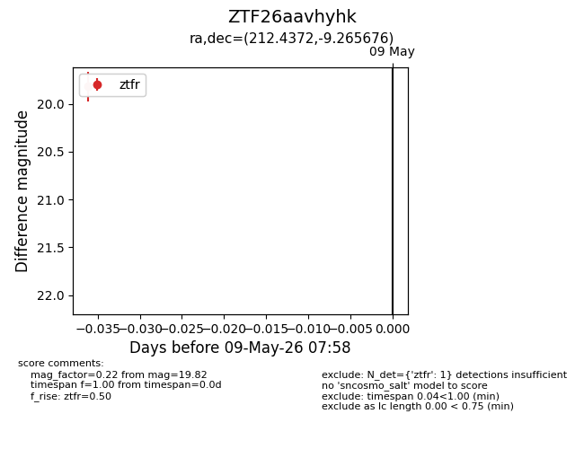
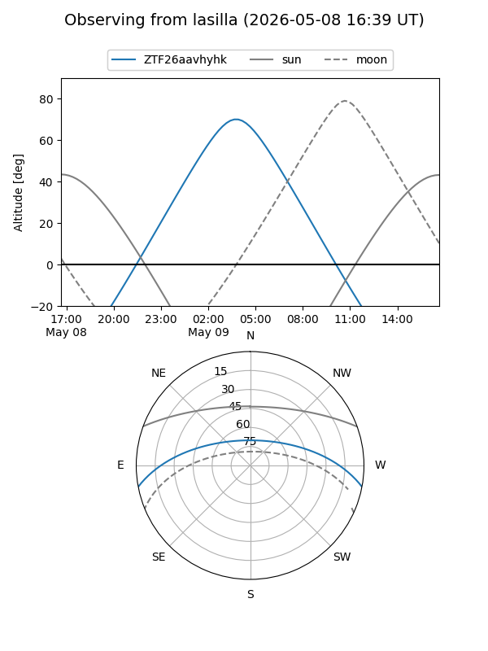
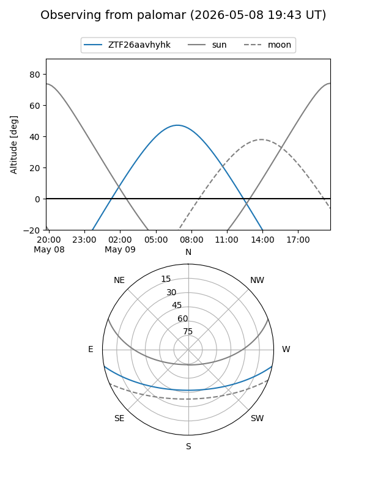

ZTF26aavhyhk
Target ZTF26aavhyhk at 2026-05-09 07:59
Aliases and brokers:
FINK: link
Lasair: link
ALeRCE: link
alt names
ZTF26aavhyhk (ztf,fink_ztf)
Coordinates:
equatorial (ra, dec) = 212.4372,-9.26568
equatorial (HMS+DMS) = 14:09:44.92,-09:15:56.43
galactic (l, b) = (333.1716,+48.95342)
Flags:
Photometry:
last ztfr=19.82
1 ztfr detections
Lightcurve

Visibility


Additional plots